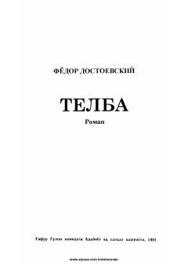

TDostoyevskiyning 'Idiot' romani — o'zbek tilida 'Telba' nomi bilan.
Bu kitob Fyodor Dostoyevskiyning mashhur 'Idiot' romanining Ibrohim G'afurov tomonidan o'zbek tiliga qilingan tarjimasi bo'lib, 'Telba' nomi bilan nashr etilgan. Asarning bosh qahramoni knyaz Mishkin — sodiq, olijanob va beozor inson bo'lib, atrofdagilar uni telba deb hisoblaydi. Roman insoniy fojialarni va jamiyatdagi ziddiyatlarni chuqur psixologik tahlil bilan tasvirlaydi.